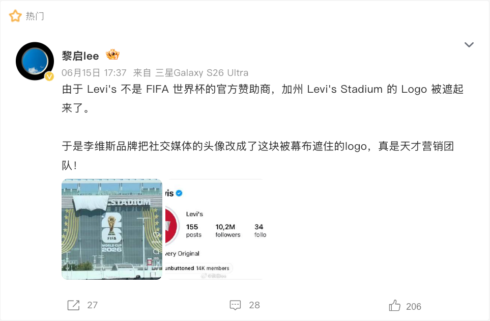

案例发生了什么

Levi’s 并非 2026 世界杯赞助商，但湾区比赛场馆长期名为 Levi’s Stadium。赛事 Clean Stadium 规则要求非官方商业标识在比赛期间被遮挡，于是外立面和记分屏上方的 Levi’s 字样被白布盖住；白布却刚好留下 Batwing 的轮廓，风吹时还会短暂露出字母。品牌没有把这件事包装成官方合作，而是迅速将全球社交账号换成“白布 Batwing”头像，Levi’s 中国用“名字可以暂时消失，但经典不会”解释 1967 年以来的视觉资产，并把讨论承接到国家主题足球服装系列。
它解决的策略问题
这页要回答的不是“Levi’s：被遮住的名字，藏不住的经典 是否参与世界杯”，而是它如何通过“Clean Stadium 限制 / 场馆冠名 / 社交响应 / 足球产品”回应“把世界杯期间必须遮挡的场馆冠名，转成 Batwing 轮廓识别与“经典藏不住”的文化叙事”这一业务问题。
资源如何变成行动
Clean Stadium 限制 / 场馆冠名 / 社交响应 / 足球产品
用“把世界杯期间必须遮挡的场馆冠名，转成 Batwing 轮廓识别与“经典藏不住”的文化叙事”所对应的生活场景、规则镜头或情绪时刻进入，而非冒充官方。
让产品、球星、社区或服务在这个切口中拥有自然角色，减少硬贴赛事的痕迹。
准备可分享、可到店、可购买或可兑现的下一步，让讨论不只停在创意本身。
动作拆解
- 保留白布、轮廓和被遮挡字样的真实现场，不虚构官方赞助身份。
- 把偶发现场转成跨市场账号头像和统一视觉，形成小时级社交跟进。
- 用 1967 年 Batwing 设计历史解释“即使没有名字也能认出”的品牌资产，而非只玩一次规则笑话。
- 以国家主题足球服装把事件注意力接回产品与生活方式，避免传播停在围观。
深度补充：从动作到复盘
以下字段用于把案例从“看过一个创意”推进到可执行、可衡量、可继续补证的研究对象。
把世界杯期间必须遮挡的场馆冠名，转成 Batwing 轮廓识别与“经典藏不住”的文化叙事
对足球文化有兴趣、但不一定追随官方赞助名单的球迷与生活方式人群
Clean Stadium 限制 / 场馆冠名 / 社交响应 / 足球产品
创意内容、社交讨论、门店/商品与可即时参与的生活场景
创意记忆、品牌自然提及、参与行为与商品/服务转化
非赞助品牌遇到 Clean Stadium 限制时，最有价值的不是挑战规则，而是检验自己的识别资产是否强到不需要名字；响应必须坚持事实、迅速统一视觉，并给注意力一个产品出口。
补齐“Levi’s：被遮住的名字，藏不住的经典”的品牌/权利方原始发布、视频首帧与完整片、线下执行现场、投放日期、市场范围及可追溯效果口径。
传播与业务机制
用反差、文化观察或稳定场景制造“不靠标识也能被记住”的识别。
观众能围观、评论、模仿或在自己的聚会/生活里使用该创意。
最适合承接到高频消费、服务使用或零售场景，而非追求空泛的赛事归属。
不暗示官方合作，不混用受保护标识，并在文化表达中评估冒犯和误读风险。
适用条件、风险与证据
- 切口必须与产品真实使用场景有关，否则容易变成蹭热度。
- 节奏上要靠近球迷讨论时刻，但不需要强行追每一场赛果。
- 对文化、肖像和赛事知识产权做独立审核。
品牌与权威来源物料
这里只展示可追溯到品牌、权利方、官方账号或明确注明原始出处的真实物料；研究图卡不计入案例图片。



官方资料、结果口径与下一步
已验证事实
- 2026 世界杯湾区比赛期间，Levi’s Stadium 外立面和记分屏上方的 Levi’s 字样被白布覆盖；本页已归档遮挡前对照、比赛现场和球迷入场视角，证明 Clean Stadium 限制真实发生。
- 遮挡没有抹去 Batwing 外轮廓。SocialBeta 留存的账号截图显示，Levi’s 全球主账号换成白布覆盖版头像；Levi’s 中国官方微博截图以“名字可以暂时消失，但经典不会”跟进，并追溯 1967 年设计来源。
- 同一案例页还收录国家主题足球服装产品图，证明传播并非只停留在一场规则意外，而是有可购买产品作为后端承接。
可追溯结果口径
- 目前只取得 Levi’s 中国截图中单条视频的可见播放与互动快照，不足以代表全球整盘效果；没有跨账号去重触达、品牌搜索、Batwing 无提示识别或产品销售数据。
原始来源
来源链接优先指向品牌、权利方或持权媒体官方页面；品牌自述数据按原口径记录，不视作独立审计结果。